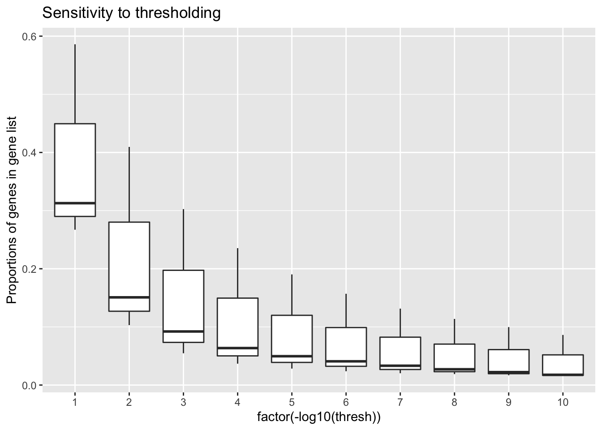
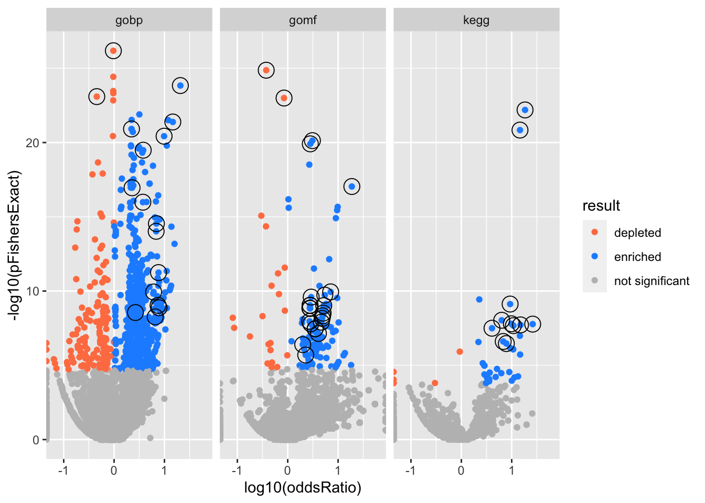
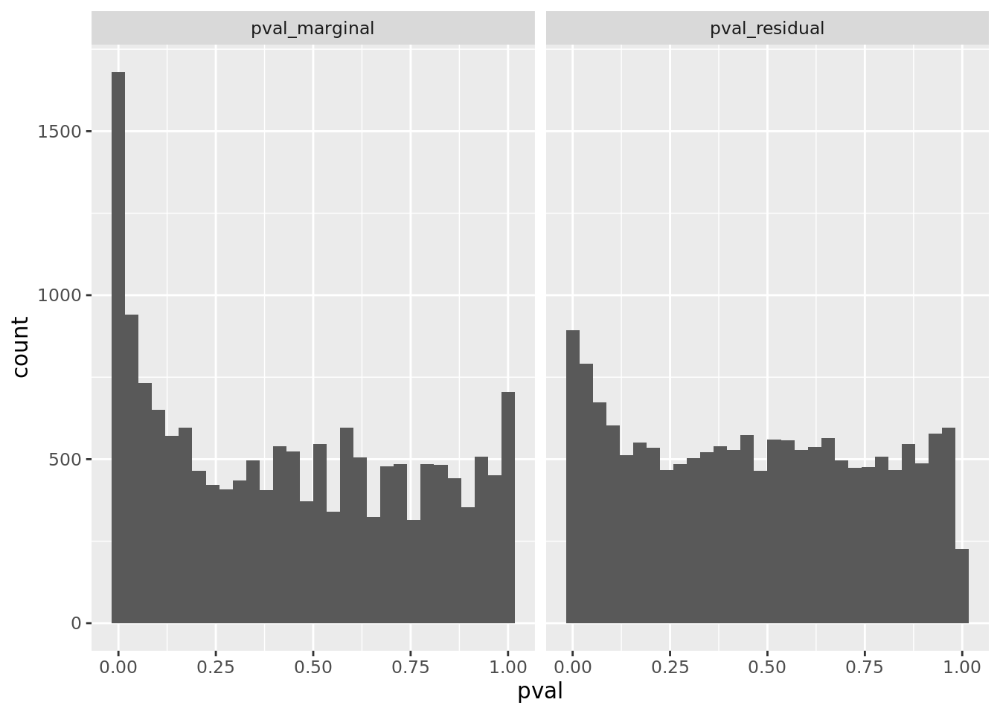
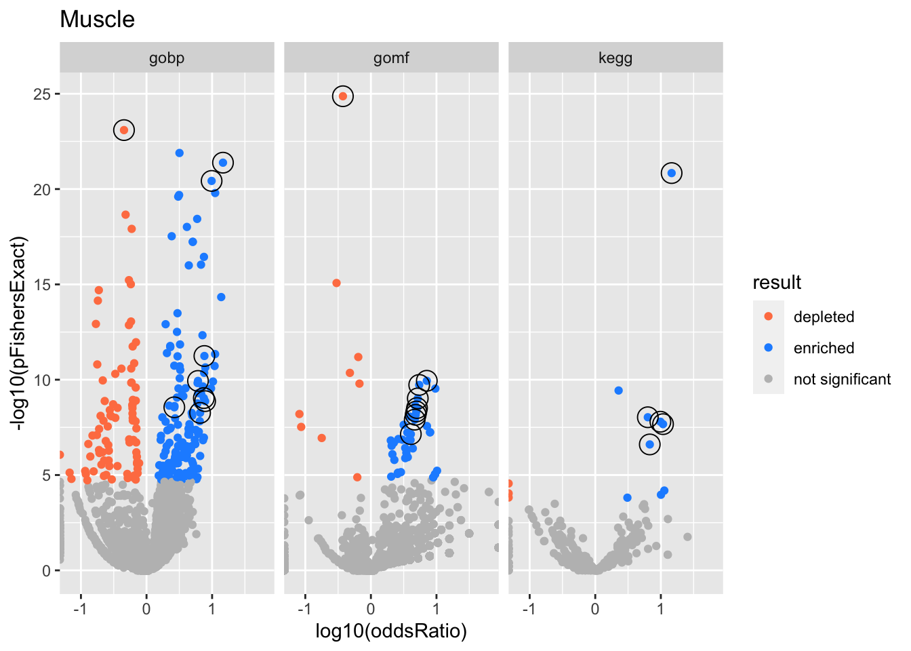

Baboon Diet Example
karltayeb
2022-03-16
Last updated: 2022-04-13
Checks: 7 0
Knit directory: logistic-susie-gsea/
This reproducible R Markdown analysis was created with workflowr (version 1.7.0). The Checks tab describes the reproducibility checks that were applied when the results were created. The Past versions tab lists the development history.
Great! Since the R Markdown file has been committed to the Git repository, you know the exact version of the code that produced these results.
Great job! The global environment was empty. Objects defined in the global environment can affect the analysis in your R Markdown file in unknown ways. For reproduciblity it’s best to always run the code in an empty environment.
The command set.seed(20220105) was run prior to running the code in the R Markdown file. Setting a seed ensures that any results that rely on randomness, e.g. subsampling or permutations, are reproducible.
Great job! Recording the operating system, R version, and package versions is critical for reproducibility.
Nice! There were no cached chunks for this analysis, so you can be confident that you successfully produced the results during this run.
Great job! Using relative paths to the files within your workflowr project makes it easier to run your code on other machines.
Great! You are using Git for version control. Tracking code development and connecting the code version to the results is critical for reproducibility.
The results in this page were generated with repository version 6e2224f. See the Past versions tab to see a history of the changes made to the R Markdown and HTML files.
Note that you need to be careful to ensure that all relevant files for the analysis have been committed to Git prior to generating the results (you can use wflow_publish or wflow_git_commit). workflowr only checks the R Markdown file, but you know if there are other scripts or data files that it depends on. Below is the status of the Git repository when the results were generated:
Ignored files:
Ignored: .DS_Store
Ignored: .RData
Ignored: .Rhistory
Ignored: .Rproj.user/
Ignored: analysis/figure/
Ignored: library/
Ignored: renv/library/
Ignored: renv/staging/
Ignored: staging/
Untracked files:
Untracked: .ipynb_checkpoints/
Untracked: Untitled.ipynb
Untracked: _targets.R
Untracked: _targets.html
Untracked: _targets.md
Untracked: _targets/
Untracked: _targets_r/
Untracked: analysis/de_droplet_noshrink.Rmd
Untracked: analysis/de_droplet_noshrink_logistic_susie.Rmd
Untracked: analysis/fetal_reference_cellid_gsea.Rmd
Untracked: analysis/fixed_intercept.Rmd
Untracked: analysis/iDEA_examples.Rmd
Untracked: analysis/latent_gene_list.Rmd
Untracked: analysis/libra_setup.Rmd
Untracked: analysis/linear_method_failure_modes.Rmd
Untracked: analysis/linear_regression_failure_regime.Rmd
Untracked: analysis/logistic_susie_veb_boost_vs_vb.Rmd
Untracked: analysis/logistic_susie_vis.Rmd
Untracked: analysis/references.bib
Untracked: analysis/simulations.Rmd
Untracked: analysis/test.Rmd
Untracked: baboon_diet_cache/
Untracked: build_site.R
Untracked: cache/
Untracked: code/enrichment_pipeline.R
Untracked: code/html_tables.R
Untracked: code/latent_logistic_susie.R
Untracked: code/logistic_susie_data_driver.R
Untracked: code/marginal_sumstat_gsea_collapsed.R
Untracked: code/sumstat_gsea.py
Untracked: code/susie_gsea_queries.R
Untracked: data/adipose_2yr_topsnp.txt
Untracked: data/de-droplet/
Untracked: data/deng/
Untracked: data/fetal_reference_cellid_gene_sets.RData
Untracked: data/human_chimp_eb/
Untracked: data/pbmc-purified/
Untracked: data/wenhe_baboon_diet/
Untracked: deng_example_cache/
Untracked: docs.zip
Untracked: export/
Untracked: human_chimp_eb_de_example_cache/
Untracked: index.md
Untracked: latent_logistic_susie_cache/
Untracked: simulation_targets/
Untracked: single_cell_pbmc_cache/
Untracked: single_cell_pbmc_l1_cache/
Untracked: summary_stat_gsea_exploration_cache/
Untracked: summary_stat_gsea_sim_cache/
Unstaged changes:
Modified: _simulation_targets.R
Modified: _targets.Rmd
Modified: analysis/alpha_for_single_cell.Rmd
Modified: analysis/deng_example.Rmd
Modified: analysis/gseabenchmark_tcga.Rmd
Modified: analysis/human_chimp_eb_de_example.Rmd
Modified: analysis/single_cell_pbmc.Rmd
Modified: analysis/single_cell_pbmc_l1.Rmd
Deleted: analysis/summary_stat_gsea_univariate_simulations.Rmd
Modified: code/fit_baselines.R
Modified: code/fit_logistic_susie.R
Modified: code/fit_mr_ash.R
Modified: code/fit_susie.R
Modified: code/load_gene_sets.R
Modified: code/marginal_sumstat_gsea.R
Modified: code/simulate_gene_lists.R
Modified: target_components/factories.R
Modified: target_components/methods.R
Note that any generated files, e.g. HTML, png, CSS, etc., are not included in this status report because it is ok for generated content to have uncommitted changes.
These are the previous versions of the repository in which changes were made to the R Markdown (analysis/baboon_diet.Rmd) and HTML (docs/baboon_diet.html) files. If you’ve configured a remote Git repository (see ?wflow_git_remote), click on the hyperlinks in the table below to view the files as they were in that past version.
| File | Version | Author | Date | Message |
|---|---|---|---|---|
| html | 6e2224f | karltayeb | 2022-04-12 | Build site. |
| Rmd | 5e3a4e3 | karltayeb | 2022-04-12 | wflow_publish(c(“analysis/index.Rmd”, “analysis/baboon_diet.Rmd”, |
| html | 26e6c28 | karltayeb | 2022-03-30 | Build site. |
| html | 1ee6003 | karltayeb | 2022-03-30 | Build site. |
| Rmd | 6798b78 | karltayeb | 2022-03-30 | wflow_publish(“analysis/baboon_diet.Rmd”) |
| html | 7d1a82b | karltayeb | 2022-03-30 | Build site. |
| Rmd | 1e5cfb0 | karltayeb | 2022-03-30 | wflow_publish(“analysis/baboon_diet.Rmd”) |
library(tidyverse)
library(htmltools)
source('code/utils.R')
source('code/logistic_susie_vb.R')
source('code/logistic_susie_veb_boost.R')
source('code/load_gene_sets.R')
source('code/enrichment_pipeline.R')Introduction
Baboons were fed different diets for two years. Adipose, liver and muscle tissue were collected. Differential expression was conducted across the diet conditions.
Setup
genesets <- load_gene_sets()
de.adipose <- read.table('data/wenhe_baboon_diet/DE_lrt_adipose.txt')
de.liver <- read.table('data/wenhe_baboon_diet/DE_lrt_liver.txt')
de.muscle <- read.table('data/wenhe_baboon_diet/DE_lrt_muscle.txt')
de <- bind_rows(
rownames_to_column(de.adipose) %>% mutate(tissue='Adipose'),
rownames_to_column(de.liver) %>% mutate(tissue='Liver'),
rownames_to_column(de.muscle) %>% mutate(tissue='Muscle')) %>%
rename(gene=rowname)
hs <- org.Hs.eg.db::org.Hs.eg.db
gene_symbols <- unique(de$gene)
symbol2entrez <- AnnotationDbi::select(
hs, keys=gene_symbols,
columns=c('ENTREZID', 'SYMBOL'),
keytype = 'SYMBOL')
add_names = function(l, n){
names(l) <- n
return(l)
}
data <- de %>%
rename(SYMBOL=gene) %>%
left_join(symbol2entrez, by='SYMBOL') %>%
relocate(ENTREZID, .after=SYMBOL) %>%
mutate( # set default columns
beta = logFC,
se = 0,
threshold.on = PValue
) %>%
group_by(tissue) %>%
group_map(~ .x, .keep = T) %>%
add_names(map_chr(., ~pluck(.x, 'tissue')[1]))Fit
# fit logistic susie
do_logistic_susie_cached = function(data,
db,
thresh,
prefix=''){
res <- xfun::cache_rds({
purrr::map_dfr(
names(data),
~do_logistic_susie(.x, db, thresh, genesets, data))
},
dir = params$cache_dir,
file=paste0(prefix, 'logistic_susie_', db, '_', thresh),
hash = list(data, db, thresh, prefix))
}
params.genesets <- eval(parse(text=params$genesets))
params.thresh <- eval(parse(text=params$thresh))
fits <- map_dfr(params.genesets, ~do_logistic_susie_cached(data, .x, params.thresh))
# fit ora
do_ora_cached = function(data, db, thresh, prefix='', ...){
res <- xfun::cache_rds({
purrr::map_dfr(names(data), ~do_ora(.x, db, thresh, genesets, data))
}, dir = params$cache_dir, file=paste0(prefix, 'ora_', db, '_', thresh), ...)
}
ora <- map_dfr(params.genesets, ~do_ora_cached(data, .x, params.thresh))Overview
Threshold sensitivity
mean.gene.prop = function(l){
purrr::map_dbl(3:10, ~get_y(l, 10^(-.x)) %>% mean())
}
thresh <- map_dbl(1:10, ~10**-.x)
.prop.ones = function(experiment){
map_dbl(thresh, ~ prep_binary_data(
genesets[['gobp']], data[[experiment]], thresh=.x)$y %>% mean())
}
prop.ones <- xfun::cache_rds({map_dfc(names(data), ~.prop.ones(.x))},
dir=params$cache_dir,
file='threshold_sensitivity')
colnames(prop.ones) <- names(data)
prop.ones <- prop.ones %>% mutate(thresh = thresh)
prop.ones %>%
pivot_longer(one_of(names(data))) %>%
group_by(name) %>%
mutate(value = value) %>%
ggplot(aes(x=factor(-log10(thresh)), y=value)) +
geom_boxplot() +
labs(
y = 'Proportions of genes in gene list',
title = 'Sensitivity to thresholding'
)
| Version | Author | Date |
|---|---|---|
| 6e2224f | karltayeb | 2022-04-12 |
Big volcano plot
Colors represent enrichment/depletion detected by Fishers exact test (Benjamini Hochberg corrected p-values < \(0.05\)). Gene sets that belong to a SuSiE credible set are circled.
get_ora_enrichments = function(tbl){
tbl %>% mutate(
padj = p.adjust(pFishersExact),
result = case_when(
padj < 0.05 & oddsRatio < 1 ~ 'depleted',
padj < 0.05 & oddsRatio > 1 ~ 'enriched',
TRUE ~ 'not significant'
)
)
}
# plot all enrichments, highlight gene sets in credible set
csdat <- res2 %>%
filter(in_cs, active_cs)
res %>%
group_by(experiment, db) %>%
get_ora_enrichments %>%
ggplot(aes(x=log10(oddsRatio), y=-log10(pFishersExact), color=result)) +
geom_point() +
geom_point(
csdat,
mapping=aes(x=log10(oddsRatio), y=-log10(pFishersExact)),
color='black', pch=21, size=5) +
scale_color_manual(values = c('depleted' = 'coral',
'enriched' = 'dodgerblue',
'not significant' = 'grey')) +
facet_wrap(vars(db))
| Version | Author | Date |
|---|---|---|
| 6e2224f | karltayeb | 2022-04-12 |
Enrichment results
Glossary
alphais the posterior probability of SuSiE including this gene set in this component which is different from PIP (probability of SuSiE including this gene set in ANY component)betaposterior mean/standard error of posterior mean for effect size. Standard errors are likely too small.oddsRatio, pHypergeometric, pFishersExactconstruct a contingency table (gene list membersip) x (gene set membership), estimate theoddsRatiogives the odds of being in the gene list conditional on being in the gene set / odds of being in the gene list conditional on NOT being in the gene set.pHypergeometricandpFishersExactare pvalues from 1 and 2 sided test respectively.
experiments <- unique(res$experiment)
do.experiment.volcano = function(this_experiment){
res %>%
filter(experiment == this_experiment) %>%
group_by(db) %>%
get_ora_enrichments %>%
ggplot(aes(x=log10(oddsRatio), y=-log10(pFishersExact), color=result)) +
geom_point() +
geom_point(
csdat %>% filter(experiment == this_experiment),
mapping=aes(x=log10(oddsRatio), y=-log10(pFishersExact)),
color='black', pch=21, size=5) +
scale_color_manual(values = c('depleted' = 'coral',
'enriched' = 'dodgerblue',
'not significant' = 'grey')) +
facet_wrap(vars(db)) +
labs(title = this_experiment)
}
for (i in 1:length(experiments)){
this_experiment <- experiments[i]
cat("\n")
cat("###", this_experiment, "\n") # Create second level headings with the names.
do.experiment.volcano(this_experiment) %>% print()
cat("\n\n")
for(db in names(html_tables[[this_experiment]])){
cat("####", db, "\n") # Create second level headings with the names.
to_print <- html_tables[[this_experiment]][[db]] %>% distinct()
to_print %>% report_susie_credible_sets() %>% htmltools::HTML() %>% print()
cat("\n")
}}Adipose

| Version | Author | Date |
|---|---|---|
| 6e2224f | karltayeb | 2022-04-12 |
gobp
| geneSet | description | alpha | beta | beta.se | pHypergeometric | pFishersExact | overlap | geneSetSize | oddsRatio |
|---|---|---|---|---|---|---|---|---|---|
| L1 | |||||||||
| GO:0072376 | protein activation cascade | 1 | 2.98 | 0.24 | 1.46e-24 | 1.46e-24 | 30 | 72 | 20.7 |
| L2 | |||||||||
| GO:0019752 | carboxylic acid metabolic process | 0.998 | 1.33 | 0.0819 | 3.28e-20 | 3.28e-20 | 87 | 811 | 3.79 |
| L3 | |||||||||
| GO:0010466 | negative regulation of peptidase activity | 0.827 | 1.67 | 0.17 | 2.88e-15 | 2.88e-15 | 33 | 171 | 6.92 |
| GO:0010951 | negative regulation of endopeptidase activity | 0.173 | 1.66 | 0.171 | 9.49e-15 | 9.49e-15 | 32 | 167 | 6.85 |
gomf
| geneSet | description | alpha | beta | beta.se | pHypergeometric | pFishersExact | overlap | geneSetSize | oddsRatio |
|---|---|---|---|---|---|---|---|---|---|
| L1 | |||||||||
| GO:0004867 | serine-type endopeptidase inhibitor activity | 1 | 2.86 | 0.272 | 9.13e-18 | 9.13e-18 | 22 | 55 | 18.8 |
kegg
| geneSet | description | alpha | beta | beta.se | pHypergeometric | pFishersExact | overlap | geneSetSize | oddsRatio |
|---|---|---|---|---|---|---|---|---|---|
| L1 | |||||||||
| hsa04610 | Complement and coagulation cascades | 1 | 3.03 | 0.243 | 6.37e-23 | 6.37e-23 | 31 | 68 | 18.4 |
| L2 | |||||||||
| hsa04950 | Maturity onset diabetes of the young | 1 | 3.4 | 0.501 | 1.68e-08 | 1.68e-08 | 9 | 16 | 26.1 |
| L3 | |||||||||
| hsa04976 | Bile secretion | 1 | 2.15 | 0.28 | 7.52e-10 | 7.52e-10 | 17 | 55 | 9.3 |
| L4 | |||||||||
| hsa00830 | Retinol metabolism | 1 | 2.8 | 0.393 | 1.9e-08 | 1.9e-08 | 11 | 26 | 15 |
| L5 | |||||||||
| hsa04979 | Cholesterol metabolism | 1 | 1.85 | 0.308 | 3.43e-07 | 3.43e-07 | 13 | 47 | 7.83 |
Liver

| Version | Author | Date |
|---|---|---|
| 6e2224f | karltayeb | 2022-04-12 |
gobp
| geneSet | description | alpha | beta | beta.se | pHypergeometric | pFishersExact | overlap | geneSetSize | oddsRatio |
|---|---|---|---|---|---|---|---|---|---|
| L1 | |||||||||
| GO:0006936 | muscle contraction | 0.982 | 0.801 | 0.118 | 5.88e-17 | 1.04e-16 | 130 | 283 | 3.73 |
| GO:0070252 | actin-mediated cell contraction | 0.00797 | 1.15 | 0.194 | 4.26e-13 | 4.26e-13 | 58 | 102 | 5.69 |
| L2 | |||||||||
| GO:0034641 | cellular nitrogen compound metabolic process | 1 | -0.497 | 0.0302 | 1 | 6.58e-27 | 970 | 5180 | 0.968 |
| L3 | |||||||||
| GO:0048513 | animal organ development | 1 | 0.429 | 0.0403 | 6.72e-22 | 1.22e-21 | 804 | 2610 | 2.22 |
| L4 | |||||||||
| GO:0006955 | immune response | 0.999 | 0.424 | 0.0531 | 6.26e-18 | 1.11e-17 | 483 | 1480 | 2.27 |
gomf
| geneSet | description | alpha | beta | beta.se | pHypergeometric | pFishersExact | overlap | geneSetSize | oddsRatio |
|---|---|---|---|---|---|---|---|---|---|
| L1 | |||||||||
| GO:0038023 | signaling receptor activity | 0.905 | 0.702 | 0.0738 | 9.03e-21 | 1.23e-20 | 283 | 745 | 2.81 |
| GO:0004888 | transmembrane signaling receptor activity | 0.0515 | 0.776 | 0.0845 | 5.76e-21 | 7.43e-21 | 229 | 565 | 3.09 |
| GO:0060089 | molecular transducer activity | 0.0435 | 0.658 | 0.0716 | 2.21e-19 | 3.07e-19 | 294 | 797 | 2.68 |
| L2 | |||||||||
| GO:0003676 | nucleic acid binding | 1 | -0.424 | 0.0388 | 1 | 1.01e-23 | 537 | 3180 | 0.846 |
| L3 | |||||||||
| GO:0048018 | receptor ligand activity | 0.882 | 0.758 | 0.118 | 1.74e-10 | 2.56e-10 | 114 | 286 | 2.93 |
| GO:0030545 | receptor regulator activity | 0.118 | 0.695 | 0.114 | 1.08e-09 | 1.41e-09 | 119 | 310 | 2.75 |
| L4 | |||||||||
| GO:0015267 | channel activity | 0.227 | 0.603 | 0.114 | 6.36e-10 | 9.14e-10 | 120 | 311 | 2.78 |
| GO:0022803 | passive transmembrane transporter activity | 0.227 | 0.603 | 0.114 | 6.36e-10 | 9.14e-10 | 120 | 311 | 2.78 |
| GO:0005244 | voltage-gated ion channel activity | 0.165 | 0.865 | 0.168 | 2.81e-08 | 3.5e-08 | 61 | 137 | 3.5 |
| GO:0022832 | voltage-gated channel activity | 0.165 | 0.865 | 0.168 | 2.81e-08 | 3.5e-08 | 61 | 137 | 3.5 |
| GO:0022838 | substrate-specific channel activity | 0.124 | 0.602 | 0.117 | 1.14e-09 | 1.49e-09 | 115 | 297 | 2.79 |
| GO:0005216 | ion channel activity | 0.0301 | 0.577 | 0.118 | 6.41e-09 | 1.1e-08 | 110 | 288 | 2.72 |
| GO:0022836 | gated channel activity | 0.0206 | 0.619 | 0.13 | 1.19e-08 | 1.6e-08 | 94 | 238 | 2.87 |
| GO:0022843 | voltage-gated cation channel activity | 0.016 | 0.923 | 0.199 | 2.05e-07 | 2.53e-07 | 45 | 95 | 3.92 |
| GO:0005261 | cation channel activity | 0.0125 | 0.626 | 0.134 | 2.83e-08 | 5.04e-08 | 88 | 222 | 2.88 |
| GO:0022839 | ion gated channel activity | 0.00409 | 0.583 | 0.132 | 8.84e-08 | 1.39e-07 | 89 | 230 | 2.77 |
| L5 | |||||||||
| GO:0008092 | cytoskeletal protein binding | 0.933 | 0.384 | 0.0704 | 2.31e-07 | 4.03e-07 | 255 | 832 | 1.99 |
| GO:0003779 | actin binding | 0.0578 | 0.503 | 0.104 | 1.3e-06 | 2.03e-06 | 124 | 364 | 2.28 |
kegg
| geneSet | description | alpha | beta | beta.se | pHypergeometric | pFishersExact | overlap | geneSetSize | oddsRatio |
|---|---|---|---|---|---|---|---|---|---|
| L1 | |||||||||
| hsa04514 | Cell adhesion molecules (CAMs) | 0.999 | 1.07 | 0.192 | 2.56e-08 | 3.18e-08 | 52 | 106 | 4.06 |
Muscle

| Version | Author | Date |
|---|---|---|
| 6e2224f | karltayeb | 2022-04-12 |
gobp
| geneSet | description | alpha | beta | beta.se | pHypergeometric | pFishersExact | overlap | geneSetSize | oddsRatio |
|---|---|---|---|---|---|---|---|---|---|
| L1 | |||||||||
| GO:0072376 | protein activation cascade | 1 | 2.55 | 0.237 | 4.12e-22 | 4.12e-22 | 34 | 72 | 14.6 |
| L2 | |||||||||
| GO:0009063 | cellular amino acid catabolic process | 0.976 | 2.15 | 0.196 | 3.74e-21 | 3.74e-21 | 40 | 107 | 9.83 |
| GO:1901606 | alpha-amino acid catabolic process | 0.0241 | 2.28 | 0.214 | 1.61e-20 | 1.61e-20 | 36 | 89 | 11.1 |
| L3 | |||||||||
| GO:0090304 | nucleic acid metabolic process | 1 | -0.844 | 0.0421 | 1 | 8.07e-24 | 138 | 4100 | 0.454 |
| L4 | |||||||||
| GO:0006641 | triglyceride metabolic process | 0.928 | 1.64 | 0.237 | 5.7e-12 | 5.7e-12 | 25 | 78 | 7.62 |
| GO:0006639 | acylglycerol metabolic process | 0.0396 | 1.42 | 0.22 | 1.16e-10 | 1.16e-10 | 26 | 95 | 6.09 |
| GO:0006638 | neutral lipid metabolic process | 0.0329 | 1.41 | 0.219 | 1.49e-10 | 1.49e-10 | 26 | 96 | 6 |
| L5 | |||||||||
| GO:0030855 | epithelial cell differentiation | 1 | 1.11 | 0.106 | 2.58e-09 | 2.8e-09 | 64 | 463 | 2.65 |
| L6 | |||||||||
| GO:0016101 | diterpenoid metabolic process | 0.591 | 1.63 | 0.262 | 9.2e-10 | 9.2e-10 | 20 | 63 | 7.48 |
| GO:0001523 | retinoid metabolic process | 0.309 | 1.66 | 0.272 | 1.33e-09 | 1.33e-09 | 19 | 58 | 7.82 |
| GO:0006721 | terpenoid metabolic process | 0.0979 | 1.51 | 0.254 | 5.48e-09 | 5.48e-09 | 20 | 69 | 6.56 |
gomf
| geneSet | description | alpha | beta | beta.se | pHypergeometric | pFishersExact | overlap | geneSetSize | oddsRatio |
|---|---|---|---|---|---|---|---|---|---|
| L1 | |||||||||
| GO:0015294 | solute:cation symporter activity | 0.933 | 1.74 | 0.237 | 1.14e-10 | 1.14e-10 | 23 | 75 | 7.12 |
| GO:0015293 | symporter activity | 0.0356 | 1.42 | 0.205 | 1.88e-10 | 1.88e-10 | 28 | 111 | 5.45 |
| GO:0015370 | solute:sodium symporter activity | 0.0311 | 2.01 | 0.294 | 2.92e-10 | 2.92e-10 | 18 | 48 | 9.62 |
| L2 | |||||||||
| GO:0003676 | nucleic acid binding | 1 | -0.981 | 0.0487 | 1 | 1.35e-25 | 87 | 3180 | 0.374 |
| L3 | |||||||||
| GO:0004866 | endopeptidase inhibitor activity | 0.56 | 1.47 | 0.202 | 3.07e-09 | 3.07e-09 | 26 | 109 | 5.05 |
| GO:0030414 | peptidase inhibitor activity | 0.348 | 1.45 | 0.201 | 4.64e-09 | 4.64e-09 | 26 | 111 | 4.93 |
| GO:0061135 | endopeptidase regulator activity | 0.0903 | 1.39 | 0.198 | 1.25e-08 | 1.25e-08 | 26 | 116 | 4.66 |
| L4 | |||||||||
| GO:0019842 | vitamin binding | 1 | 1.49 | 0.199 | 9.57e-10 | 9.57e-10 | 27 | 111 | 5.19 |
| L5 | |||||||||
| GO:0004252 | serine-type endopeptidase activity | 0.929 | 1.35 | 0.199 | 6.95e-09 | 6.95e-09 | 26 | 113 | 4.82 |
| GO:0017171 | serine hydrolase activity | 0.0422 | 1.18 | 0.186 | 7.16e-08 | 7.16e-08 | 27 | 134 | 4.07 |
| GO:0008236 | serine-type peptidase activity | 0.0283 | 1.18 | 0.189 | 1.46e-07 | 1.46e-07 | 26 | 130 | 4.02 |
kegg
| geneSet | description | alpha | beta | beta.se | pHypergeometric | pFishersExact | overlap | geneSetSize | oddsRatio |
|---|---|---|---|---|---|---|---|---|---|
| L1 | |||||||||
| hsa04610 | Complement and coagulation cascades | 1 | 2.71 | 0.242 | 1.45e-21 | 1.45e-21 | 35 | 68 | 14.6 |
| L2 | |||||||||
| hsa00260 | Glycine, serine and threonine metabolism | 0.987 | 1.64 | 0.344 | 1.6e-08 | 1.6e-08 | 15 | 35 | 9.85 |
| hsa04950 | Maturity onset diabetes of the young | 0.00463 | 1.91 | 0.574 | 0.000108 | 0.000108 | 7 | 16 | 10 |
| L3 | |||||||||
| hsa04979 | Cholesterol metabolism | 1 | 1.95 | 0.295 | 2.49e-07 | 2.49e-07 | 16 | 47 | 6.78 |
| L4 | |||||||||
| hsa00380 | Tryptophan metabolism | 1 | 2.31 | 0.36 | 2.14e-08 | 2.14e-08 | 14 | 31 | 10.8 |
| L5 | |||||||||
| hsa01230 | Biosynthesis of amino acids | 1 | 1.55 | 0.256 | 9.31e-09 | 9.31e-09 | 21 | 65 | 6.33 |
sessionInfo()#> R version 4.1.2 (2021-11-01)
#> Platform: x86_64-apple-darwin17.0 (64-bit)
#> Running under: macOS Big Sur 10.16
#>
#> Matrix products: default
#> BLAS: /Library/Frameworks/R.framework/Versions/4.1/Resources/lib/libRblas.0.dylib
#> LAPACK: /Library/Frameworks/R.framework/Versions/4.1/Resources/lib/libRlapack.dylib
#>
#> locale:
#> [1] en_US.UTF-8/en_US.UTF-8/en_US.UTF-8/C/en_US.UTF-8/en_US.UTF-8
#>
#> attached base packages:
#> [1] stats graphics grDevices datasets utils methods base
#>
#> other attached packages:
#> [1] kableExtra_1.3.4 BiocGenerics_0.40.0 htmltools_0.5.2
#> [4] forcats_0.5.1 stringr_1.4.0 dplyr_1.0.8
#> [7] purrr_0.3.4 readr_2.1.2 tidyr_1.2.0
#> [10] tibble_3.1.6 ggplot2_3.3.5 tidyverse_1.3.1
#>
#> loaded via a namespace (and not attached):
#> [1] colorspace_2.0-3 ellipsis_0.3.2 rprojroot_2.0.2
#> [4] XVector_0.34.0 fs_1.5.2 rstudioapi_0.13
#> [7] farver_2.1.0 bit64_4.0.5 AnnotationDbi_1.56.2
#> [10] fansi_1.0.2 lubridate_1.8.0 xml2_1.3.3
#> [13] codetools_0.2-18 doParallel_1.0.17 cachem_1.0.6
#> [16] knitr_1.38 jsonlite_1.8.0 workflowr_1.7.0
#> [19] apcluster_1.4.9 WebGestaltR_0.4.4 broom_0.7.12
#> [22] dbplyr_2.1.1 png_0.1-7 BiocManager_1.30.16
#> [25] compiler_4.1.2 httr_1.4.2 backports_1.4.1
#> [28] assertthat_0.2.1 Matrix_1.4-0 fastmap_1.1.0
#> [31] cli_3.2.0 later_1.3.0 tools_4.1.2
#> [34] igraph_1.2.11 gtable_0.3.0 glue_1.6.2
#> [37] GenomeInfoDbData_1.2.7 doRNG_1.8.2 Rcpp_1.0.8.2
#> [40] Biobase_2.54.0 cellranger_1.1.0 jquerylib_0.1.4
#> [43] vctrs_0.3.8 Biostrings_2.62.0 svglite_2.1.0
#> [46] iterators_1.0.14 xfun_0.30 rvest_1.0.2
#> [49] lifecycle_1.0.1 renv_0.15.4 rngtools_1.5.2
#> [52] org.Hs.eg.db_3.14.0 zlibbioc_1.40.0 scales_1.1.1
#> [55] vroom_1.5.7 hms_1.1.1 promises_1.2.0.1
#> [58] parallel_4.1.2 yaml_2.3.5 curl_4.3.2
#> [61] memoise_2.0.1 sass_0.4.0 stringi_1.7.6
#> [64] RSQLite_2.2.10 highr_0.9 S4Vectors_0.32.3
#> [67] foreach_1.5.2 GenomeInfoDb_1.30.1 rlang_1.0.2
#> [70] pkgconfig_2.0.3 systemfonts_1.0.4 bitops_1.0-7
#> [73] evaluate_0.15 lattice_0.20-45 labeling_0.4.2
#> [76] bit_4.0.4 tidyselect_1.1.2 magrittr_2.0.2
#> [79] R6_2.5.1 IRanges_2.28.0 generics_0.1.2
#> [82] DBI_1.1.2 pillar_1.7.0 haven_2.4.3
#> [85] whisker_0.4 withr_2.5.0 KEGGREST_1.34.0
#> [88] RCurl_1.98-1.6 modelr_0.1.8 crayon_1.5.0
#> [91] utf8_1.2.2 tzdb_0.2.0 rmarkdown_2.13
#> [94] grid_4.1.2 readxl_1.3.1 blob_1.2.2
#> [97] git2r_0.29.0 webshot_0.5.2 reprex_2.0.1
#> [100] digest_0.6.29 httpuv_1.6.5 stats4_4.1.2
#> [103] munsell_0.5.0 viridisLite_0.4.0 bslib_0.3.1